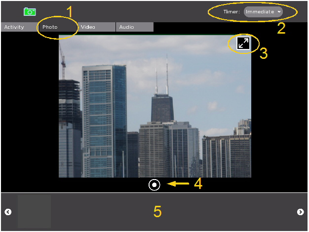

Taking Photos
You can use the Record Activity to take photographs of the world around you. The screenshot below highlights some of the key controls available in the main Photo Tab.

Let's look at some specific details about the items highlighted above:
- This item shows the Photo Tab has been highlighted. This means that the Record Activity is in photo capture mode and all of the controls you see now reflect this.
- Record allows users to set a timer before recording happens. In this case, the timer is a pulldown menu that allows you to chose among three options: "Immediate", "5 Seconds", and "10 Seconds". Delaying the timer might be useful if you want to give yourself some time to get to the right pose before the Record Activity takes a snapshot.
- You often see a double arrow at the top right corner of your picture window. This arrow puts record into full screen mode, where everything is hidden except the picture window and the record button (item 4 below). In full screen mode, you can navigate the pointer to the top right corner and a similar icon pops up to allow you to return to normal mode.
- This is the button that tells the Record Activity to start recording. In Photo mode, Record takes a snapshot of whatever is in front of the camera.
- The area between the left and right arrows is called the tray. It is where previously recorded items are placed so that you can look at them later on.
Once Record successfully takes a photo, it shows up as an icon on the tray. You can click the icon to view the photo and to update information about that picture.

In the Photo View screenshot above, item 1 shows how the tray displays a history of your previously taken photos. When you click on a photo, you are taken to the interface you see in the screenshot, which includes a text field where you can name your photo (item 2). You also see the image taken by your camera (in this case, the skyline of Chicago). Item 3 is a small output window of what your camera sees (in this case, a very happy student!). If you click on this small window, you are returned to the main photo screen from which you can take more pictures.
Item 4 on the bottom right of your image is a little tab that allows you to find out even more about the photo that was taken. The screenshot below shows the new window that appears. Here, you can read and enter new 'tags' for your image, and find out about when the picture was taken and by whom. A tag is a single word that helps categorise or describe the photo.
As with the photo view window, you have the output of your camera on the bottom left. You can click this to go back to taking photos.

Author : Pictures
© Faisal Anwar 2008
Modifications:
Tom Boyle 2008
License : General Public License
Produced in FLOSS Manuals (http://www.flossmanuals.net)